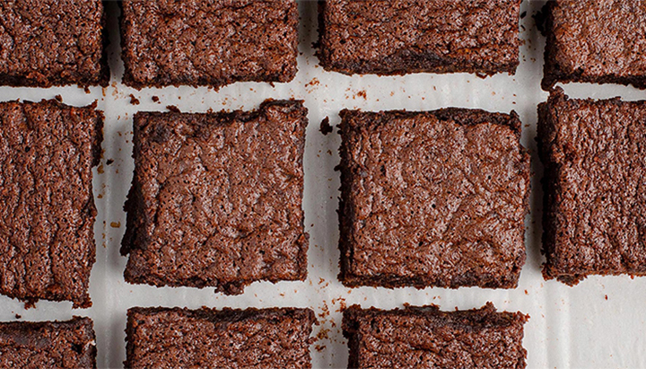

Postres
Brownies de chocolate con nueces
¡Basta de brownie de cajita! Hacé esta receta casera fácil y rápida.
Ingredientes
- 150 gr de chocolate de taza (una tableta entera)
- 170 gr de azúcar (14 cucharadas soperas)
- 100 gr de harina (10 cucharadas soperas)
- 100 gr de manteca
- 1 pizca de sal
- 3 huevos
Opcional
- 50 gr de nueces u otro fruto seco
Paso a paso
- Fundir el chocolate con la manteca a baño María o en el microondas en intervalos de 20 segundos.
- Integrar el azúcar.
- Añadir los huevos de a uno.
- Agregar la harina tamizada, las nueces y la pizca de sal.
- Verter la preparación en un molde forrado con papel de aluminio o manteca, enmantecado y enharinado.
- Cocinar en horno precalentado a temperatura alta, por 5 minutos aproximadamente, para luego bajar a una temperatura media y cocinar por 15 minutos más.
- Dejar enfriar, desmoldar y cortar en cuadrados.
Y si la receta no es suficiente... Te dejo el tutorial
¡Tip!
La clave para que el brownie salga bien es respetar el tiempo y la temperatura de cocción. A diferencia de la cocción de una torta en la cual queremos que se “infle”, cuando hacemos un brownie buscamos un postre más bien compacto ¡para que quede bien húmedo!